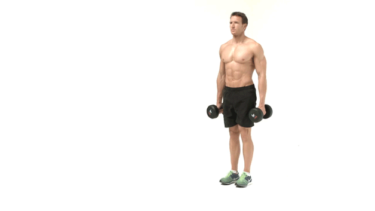

Squats
- Focus on keeping your back engaged during the movement and keep a neutral knee position and remember, move the weight up slowly!
- The best exercise for overall leg development, the squat works almost every part of the lower body especially the glutes and quads.
- There are numerous variations of the squat such as the body weight squat, goblet squat and the pistol squat which are great for switching things up.

Lunges
- Another great compound movement, the lunges should definitely be added to your leg day.
- Lunges work similar muscles as squats but with more of an emphasis on glutes and quads.
- Start out with body weight lunges then add weight as you become more comfortable with them.

Hip Thrust
- Without doubt the best exercise for glutes, the hip thrust also targets your hamstrings and lower back.
- Once you become able to do 16+ reps you can add weight by holding a kettle bell on your waist or laying a barbell across your hips.

Romanian Deadlift
- A great exercise to work on your posterior chain, Romanian deadlifts target your hamstrings, glutes and lower back.
- Its vital to keep your spine neutral and not rounded during this movement in order to activate your hamstrings and stay away from possible injury.

Step-Up Lunge
- A great exercise with or without added weight, the step up lunge is a great functional movement that targets your quads and glutes.
- Varying step height and weights are a good way to switch things up when you become proficient.